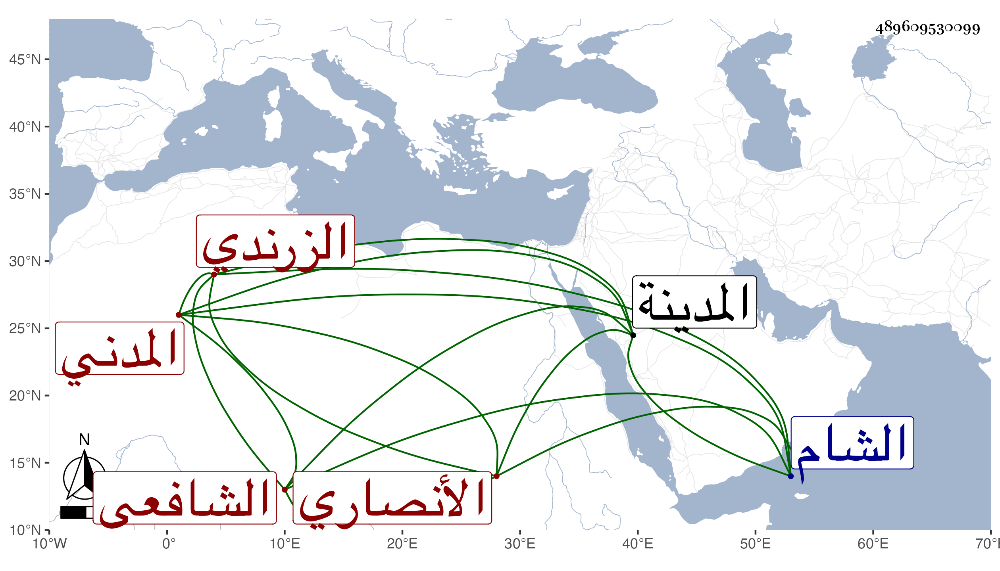

0902Sakhawi.DawLamic.ITO20230111-ara1.EIS1600.489609530099
Biography ID: 489609530099
931
عبد اللطيف بن الكمال أبي الفضل محمد بن السراج عبد اللطيف بن محمد بن يوسف بن الحسن الأنصاري الزرندي المدني الشافعي والد الشمس محمد الآتي . ولد في صفر سنة أربع وتسعين وسبعمائة بالمدينة وحفظ القرآن والشاطبية والمنهاج وألفية النحو واشتغل يسيرا وسمع علي الجمال الكازروني وأبي الفتح وأبي الفرج ابني المراغي وتلا بالسبع على السيد الطباطبي ، ومات مقتولا في اللجون بدرب الشام بعد الخمسين تقريبا .
